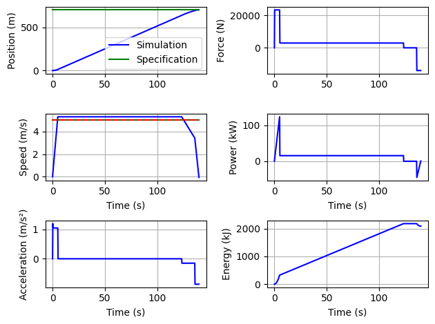
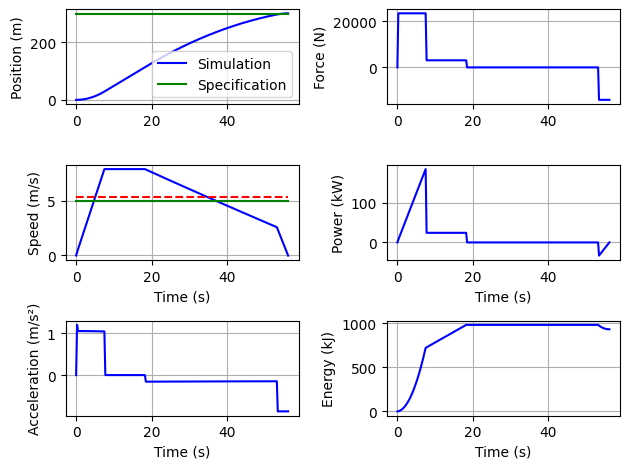
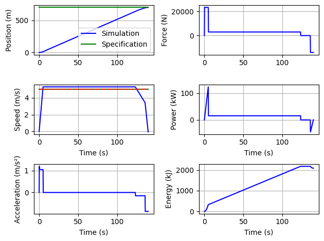
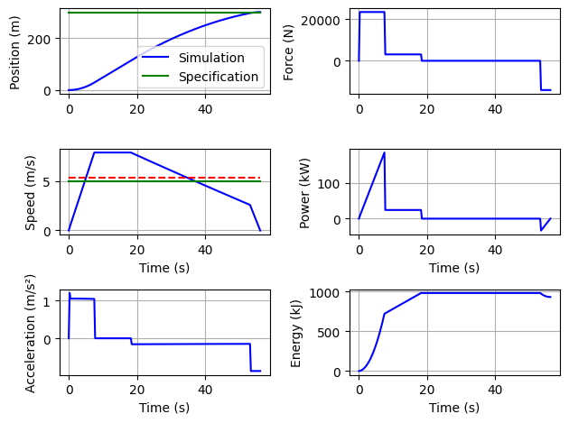

8.7. Hydrid Storage Architecture and Specification#
Written by Marc Budinger, INSA Toulouse, France
We will consider here an hybrid solutions with super capacities and traction battery packs. This notebook is dedicated :
to understand main operating limits of super capacitors and batteries
to understand a control architecture enabling to split power between super capacitors and batteries
to specify energy storage requirements of the different energy sources.
The storage element selection approach developed here is inspired by the following publication:
Jaafar, A., Sareni, B., Roboam, X., & Thiounn-Guermeur, M. (2010, September). Sizing of a hybrid locomotive based on accumulators and ultracapacitors. In 2010 IEEE Vehicle Power and Propulsion Conference (pp. 1-6). IEEE.[pdf]
8.7.1. Main operating limits of energy storage components#
To enable the selection of energy storage means, it is necessary to understand their main operational limitations. These limits can be representative:
rapid deterioration that can develop over an operating cycle, for example one journey or a few journeys over the same day.
gradual degradation linked to the lifespan of the component over multiple cycles, months or years, where the accumulation of degradation leads to an irreversible loss of performance.
Questions: Examine the following Figures extract from datasheet of elementary storage cells of supercapacitors or battery (LiFeSO4). Propose selection criteria representative of the main operational limits. Explain how to size a battery taking into account an high number of discharge cycles.


8.7.2. Simulation of a complete line#
The objective of this section is to propose an evolution of the previous python codes to be able to:
simulate the power profile necessary for a complete line comprising several sections.
We will define in particular the type of vehicle, the different lengths of sections between 2 stations (Distances vector), the average speed to be ensured (Speeds vector), the presence of charger in station (Chargers vector), the stopping duration at station (StopDuration vector), the ratio between the maximum braking power and the maximum acceleration power (RatioBrakeMax).
provide the information necessary for sizing the battery/supercapacity packs that could be added.
We assume here an efficiency of the motorization chain of 100%.
Each line section will be optimized in order to meet the requirements defined previously and minimize the energy consumed. -The energy flow or the resulting power demand will be shared between battery and supercapacity with control based on frequency sharing of demands: the low frequency power will be provided by the batteries while the high frequency part will be provided by supercapacitors.
Indicators useful for sizing will then be generated from these power profiles.
take into account the energy that could come from charging stations or catenaries.
This version will only implement the consideration of charging stations.
Each charging station will provide the power to compensate for the energy of the travel from the last station.
Here we load all the functions and classes defined in the previous notebook.
%run ./01b_CaseStudy_Specification.ipynb
Vehicle Max Acceleration (depending of max force) is too low or travel distance too small or mean speed too small
Duration of traject for given mean speed: 92.76923076923077s
Consumption per passenger: 21.18 kJ/(Pax.km)
Max energy discharge: 5039 kJ
Consumption per passenger: 103.06 kJ/(Pax.km)


Min acceleration is: 0.3114059332964806m/s²
Vehicle Max Acceleration (depending of max force) is too low or travel distance too small or mean speed too small
Consumption per passenger: 18.74 kJ/(Pax.km)
Max energy discharge: 7420 kJ


/tmp/ipykernel_2957/2473967107.py:17: DeprecationWarning: Conversion of an array with ndim > 0 to a scalar is deprecated, and will error in future. Ensure you extract a single element from your array before performing this operation. (Deprecated NumPy 1.25.)
k1=float(sol.x)
0.036125972011676784
[0.036125972011676784, 1, 0.9638740279883232]
Consumption per passenger: 20.44 kJ/(Pax.km)
Max energy discharge: 4450 kJ

Vehicle Max Acceleration (depending of max force) is too low or travel distance too small or mean speed too small
message: Optimization terminated successfully.
success: True
fun: 1.1099455741581892
x: [ 1.304e-01 4.037e-01 9.716e-01]
nit: 18
nfev: 859
population: [[ 1.304e-01 4.037e-01 9.716e-01]
[ 2.166e-01 3.287e-01 9.810e-01]
...
[ 2.857e-01 2.433e-01 9.654e-01]
[ 1.351e-01 4.059e-01 9.665e-01]]
population_energies: [ 1.110e+00 1.137e+00 ... 1.126e+00 1.116e+00]
Optimal vector : [0.13043622 0.40367701 0.97159747]
Brake power/Acceleration power ratio is: 0.3771283455419245
Constraints vector : [0.0072811123951992025, 0.005597014925373181, 0.2228716544580755]
Consumption per passenger: 17.06 kJ/(Pax.km)
Max energy discharge: 3412 kJ
######################################
message: Optimization terminated successfully.
success: True
fun: 1.4627161460359577
x: [ 2.773e-01 2.212e-01 9.688e-01]
nit: 39
nfev: 1804
population: [[ 2.773e-01 2.212e-01 9.688e-01]
[ 2.694e-01 2.255e-01 9.696e-01]
...
[ 2.633e-01 2.282e-01 9.720e-01]
[ 2.666e-01 2.241e-01 9.701e-01]]
population_energies: [ 1.463e+00 1.464e+00 ... 1.466e+00 1.464e+00]
Optimal vector : [0.27726711 0.22117309 0.96877925]
Brake power/Acceleration power ratio is: 0.33307979392645
Constraints vector : [0.0006461216493124681, 0.00020729684908794098, 0.26692020607355]
Consumption per passenger: 16.97 kJ/(Pax.km)
Max energy discharge: 3293 kJ
Calculation of energy consumption of different vehicles:
Tramway :
Vehicle Max Acceleration (depending of max force) is too low or travel distance too small or mean speed too small
message: Optimization terminated successfully.
success: True
fun: 1.2482194479805129
x: [ 9.248e-02 4.971e-01 9.723e-01]
nit: 21
nfev: 994
population: [[ 9.248e-02 4.971e-01 9.723e-01]
[ 1.326e-01 3.971e-01 9.768e-01]
...
[ 9.807e-02 4.822e-01 9.643e-01]
[ 1.060e-01 4.377e-01 9.581e-01]]
population_energies: [ 1.248e+00 1.286e+00 ... 1.250e+00 1.251e+00]
Consumption per passenger: 19.71 kJ/(Pax.km)
----
Trolleybus :
Vehicle Max Acceleration (depending of max force) is too low or travel distance too small or mean speed too small
message: Optimization terminated successfully.
success: True
fun: 1.119398008169179
x: [ 4.888e-02 8.052e-01 9.784e-01]
nit: 17
nfev: 814
population: [[ 4.888e-02 8.052e-01 9.784e-01]
[ 4.830e-02 8.085e-01 9.754e-01]
...
[ 4.401e-02 8.238e-01 9.603e-01]
[ 4.989e-02 8.090e-01 9.678e-01]]
population_energies: [ 1.119e+00 1.119e+00 ... 1.124e+00 1.120e+00]
Consumption per passenger: 33.80 kJ/(Pax.km)
----
Bus :
Vehicle Max Acceleration (depending of max force) is too low or travel distance too small or mean speed too small
message: Optimization terminated successfully.
success: True
fun: 1.1382110888204808
x: [ 5.520e-02 7.671e-01 9.684e-01]
nit: 24
nfev: 1129
population: [[ 5.520e-02 7.671e-01 9.684e-01]
[ 5.921e-02 7.932e-01 9.654e-01]
...
[ 7.244e-02 6.501e-01 9.739e-01]
[ 5.241e-02 7.661e-01 9.680e-01]]
population_energies: [ 1.138e+00 1.142e+00 ... 1.158e+00 1.138e+00]
Consumption per passenger: 34.50 kJ/(Pax.km)
----
Car :
message: Optimization terminated successfully.
success: True
fun: 1.3512967382800352
x: [ 1.056e-03 6.965e-01 9.877e-01]
nit: 29
nfev: 1354
population: [[ 1.056e-03 6.965e-01 9.877e-01]
[ 8.370e-04 6.955e-01 9.876e-01]
...
[ 1.969e-03 6.933e-01 9.868e-01]
[ 7.760e-04 7.034e-01 9.864e-01]]
population_energies: [ 1.351e+00 1.351e+00 ... 1.351e+00 1.351e+00]
Consumption per passenger: 89.63 kJ/(Pax.km)

Here we define a line class with all the functionalities described just before.
from scipy import signal
class line():
def __init__(self,Vehicle, Distances,Speeds, Chargers, StopDuration, RatioBrakeMax):
i=0
self.Section=[]
self.Chargers = Chargers # Boolean vector (True = Charger, False = No Charger , at end of te section)
self.StopDuration = StopDuration # [s] station stop duration (scalar)
self.RatioBrakeMax = RatioBrakeMax # [-] Ratio between max braking power / max acceleration power
# initialization of transient evolution (vectors)
self.PowerStorage= [] # Transient evolution of requested power
self.GlobalTime=[] # Time vector for plot and energy integration
self.GlobalNRJStorage=[] # Transient evolution of energy
self.PowerLF = [] # Transient evolution of power (Low Frequency)
self.PowerHF = [] # Transient evolution of power (high Frequency)
self.LFNRJStorage=[] # Time vector for plot and energy integration (Low Frequency)
self.HFNRJStorage=[] # Time vector for plot and energy integration (High Frequency)
self.TotalLineDistance = sum(Distances)
self.dt=0.25 # Time step for numerical integration
# print characteristic of each section
for d,s,c in zip(Distances,Speeds,Chargers):
print("Section %.i: %.i m at %.2f m/s %s charger"%(i+1,d,s, "whith" if c else "without"))
self.Section=self.Section+[OptimSection(Vehicle,d,s,self.RatioBrakeMax,self.dt)]
i=i+1
# Optimization loop of each section of the line
def optimLine(self):
X=[0.1,1,0.9]
for i in range(len(self.Section)):
self.Section[i].optimizeGConso(X)
self.Section[i].plot()
# Power vector concatenation
def CalculPowerStorage(self):
NRJ = 0
self.PowerStorage= []
self.GlobalTime= []
dt=self.dt # [s] pas de temps pour l'integration
# Power vector build thanks concatenation
for i in range(len(self.Section)):
NRJ=NRJ+self.Section[i].NRJsection[-1] # we add here the energy consummed on the section
self.PowerStorage = self.PowerStorage + self.Section[i].psection
# Chargers effect
if (self.Chargers[i] == True and i<(len(self.Section)-1)):
tcharge=NRJ/self.Section[i].Vehicle.Pmax # Charging time caculation function of energy
else:
tcharge=0
if (tcharge>=self.StopDuration):
self.PowerStorage = self.PowerStorage + [-self.Section[i].Vehicle.Pmax]*int(tcharge/dt)
NRJ=0
else:
if (i<(len(self.Section)-1)):
self.PowerStorage = self.PowerStorage + [-self.Section[i].Vehicle.Pmax]*int(tcharge/dt)
self.PowerStorage = self.PowerStorage + [0]*int((self.StopDuration-tcharge)/dt)
if (self.Chargers[i] == True) :
NRJ=0
# Time vector
t=0
for i in range(len(self.PowerStorage)):
self.GlobalTime = self.GlobalTime + [t]
t = t + dt
# Filtering of total power in order to generate LF and HF pwoers
def FilterPower(self, omega):
TF=signal.TransferFunction([1], [1/omega**2, 2*1/omega, 1])
time, self.PowerLF, state = signal.lsim(TF, self.PowerStorage , self.GlobalTime)
self.PowerHF = self.PowerStorage - self.PowerLF
# NRJ vector integration from power vectors
def IntegrateNRJ(self):
t=0
NRJtotal=0
NRJHF=0
NRJLF=0
#NRJTotalAging=0
#NRJLFAging=0
self.HFNRJStorage = []
self.GlobalNRJStorage = []
self.LFNRJStorage = []
dt=self.dt
for i in range(len(self.PowerStorage)):
self.GlobalNRJStorage = self.GlobalNRJStorage + [NRJtotal]
self.HFNRJStorage = self.HFNRJStorage + [NRJHF]
self.LFNRJStorage = self.LFNRJStorage + [NRJLF]
#self.TotalNRJAging = self.TotalNRJAging + [NRJTotalAging]
#self.LFNRJAging = self.LFNRJAging + [NRJLFAging]
t = t + dt
NRJtotal = NRJtotal+(self.PowerStorage[i])*dt
NRJHF = NRJHF+(self.PowerHF[i])*dt
NRJLF = NRJLF+(self.PowerLF[i])*dt
PmaxHF = max(abs(min(self.PowerHF)),max(self.PowerHF))/1e3 # kW
PmaxLF = max(self.PowerLF)/1e3 # kW
PmaxBrakeLF = abs(min(self.PowerLF))/1e3 # kW, Max power braking
NRJHF = (max(self.HFNRJStorage) - min(self.HFNRJStorage))/3600/1e3 # NRJ en kWh
NRJLF = (max(self.LFNRJStorage) - min(self.LFNRJStorage))/3600/1e3 # NRJ en kWh
return PmaxHF, PmaxLF, PmaxBrakeLF, NRJHF, NRJLF
# Main results plot
def plot(self):
fig, axs = plt.subplots(2,1)
try:
axs[0].plot(self.GlobalTime,self.PowerStorage,'b-',label='Total')
axs[0].plot(self.GlobalTime,self.PowerLF,'r-.',label='LF')
axs[0].plot(self.GlobalTime,self.PowerHF,'g-.',label='HF')
except:
pass
axs[0].set_ylabel("Power (W)")
axs[0].legend(bbox_to_anchor=(1.05, 1.0), loc='upper left')
axs[0].grid()
try:
axs[1].plot(self.GlobalTime,self.GlobalNRJStorage,'b-',label='Total')
axs[1].plot(self.GlobalTime,self.LFNRJStorage,'r-.',label='LF')
axs[1].plot(self.GlobalTime,self.HFNRJStorage,'g-.',label='HF')
axs[1].set_ylabel("Energy (J)")
axs[1].legend(bbox_to_anchor=(1.05, 1.0), loc='upper left')
axs[1].grid()
axs[1].set_xlabel('Time (s)')
except:
fig.delaxes(axs[1])
fig.tight_layout()
8.7.3. Example of a line definition#
We can now use this new class to define a bus transport line with the following requirements:
distances: 700, 500, 400, 700, 300, 300, 300, 300, 300, 300 m/s
mean speed: 7, 7, 7, 5, 5, 5, 5, 5 m/s
one final charger
ToulouseC=line(Bus,[700,500,400,700,300,300,300,300,300],[7, 7, 7,5,5,5,5,5],[False,False,False,False,False,False,False,True], 20, 0.6)
#ToulouseC=line(Bus,[700,500,400],[7, 7, 7],[False,False,True], 20, 0.6)
Section 1: 700 m at 7.00 m/s without charger
Vehicle Max Acceleration (depending of max force) is too low or travel distance too small or mean speed too small
Section 2: 500 m at 7.00 m/s without charger
Vehicle Max Acceleration (depending of max force) is too low or travel distance too small or mean speed too small
Section 3: 400 m at 7.00 m/s without charger
Vehicle Max Acceleration (depending of max force) is too low or travel distance too small or mean speed too small
Section 4: 700 m at 5.00 m/s without charger
Section 5: 300 m at 5.00 m/s without charger
Vehicle Max Acceleration (depending of max force) is too low or travel distance too small or mean speed too small
Section 6: 300 m at 5.00 m/s without charger
Vehicle Max Acceleration (depending of max force) is too low or travel distance too small or mean speed too small
Section 7: 300 m at 5.00 m/s without charger
Vehicle Max Acceleration (depending of max force) is too low or travel distance too small or mean speed too small
Section 8: 300 m at 5.00 m/s whith charger
Vehicle Max Acceleration (depending of max force) is too low or travel distance too small or mean speed too small
Each speed profil section can be optimized.
ToulouseC.optimLine()
message: Optimization terminated successfully.
success: True
fun: 1.0790038760811214
x: [ 4.907e-02 8.194e-01 9.785e-01]
nit: 21
nfev: 994
population: [[ 4.907e-02 8.194e-01 9.785e-01]
[ 4.951e-02 8.387e-01 9.775e-01]
...
[ 4.904e-02 8.280e-01 9.815e-01]
[ 4.578e-02 8.648e-01 9.878e-01]]
population_energies: [ 1.079e+00 1.080e+00 ... 1.079e+00 1.081e+00]
message: Optimization terminated successfully.
success: True
fun: 1.0914995735872388
x: [ 8.993e-02 7.153e-01 9.659e-01]
nit: 26
nfev: 1219
population: [[ 8.993e-02 7.153e-01 9.659e-01]
[ 9.502e-02 7.345e-01 9.723e-01]
...
[ 1.133e-01 6.808e-01 9.786e-01]
[ 8.739e-02 7.405e-01 9.695e-01]]
population_energies: [ 1.091e+00 1.097e+00 ... 1.105e+00 1.093e+00]
message: Optimization terminated successfully.
success: True
fun: 1.103788938532267
x: [ 9.707e-02 8.653e-01 9.210e-01]
nit: 14
nfev: 679
population: [[ 9.707e-02 8.653e-01 9.210e-01]
[ 1.516e-01 6.361e-01 9.474e-01]
...
[ 1.158e-01 7.758e-01 9.411e-01]
[ 1.928e-01 6.004e-01 9.315e-01]]
population_energies: [ 1.104e+00 1.105e+00 ... 1.106e+00 1.119e+00]
message: Optimization terminated successfully.
success: True
fun: 1.0405787055502655
x: [ 1.913e-02 9.213e-01 9.895e-01]
nit: 34
nfev: 1579
population: [[ 1.913e-02 9.213e-01 9.895e-01]
[ 3.990e-02 8.782e-01 9.734e-01]
...
[ 1.960e-02 9.479e-01 9.891e-01]
[ 1.869e-02 9.353e-01 9.880e-01]]
population_energies: [ 1.041e+00 1.073e+00 ... 1.045e+00 1.041e+00]
message: Optimization terminated successfully.
success: True
fun: 1.0781068591035496
x: [ 2.472e-01 3.794e-01 9.892e-01]
nit: 14
nfev: 679
population: [[ 2.472e-01 3.794e-01 9.892e-01]
[ 1.715e-01 5.623e-01 9.511e-01]
...
[ 1.832e-01 5.600e-01 9.429e-01]
[ 2.526e-01 3.878e-01 9.867e-01]]
population_energies: [ 1.078e+00 1.091e+00 ... 1.097e+00 1.085e+00]
message: Optimization terminated successfully.
success: True
fun: 1.0603646966302902
x: [ 6.696e-02 7.661e-01 9.708e-01]
nit: 16
nfev: 769
population: [[ 6.696e-02 7.661e-01 9.708e-01]
[ 7.954e-02 7.757e-01 9.763e-01]
...
[ 9.494e-02 6.937e-01 9.728e-01]
[ 8.737e-02 7.279e-01 9.723e-01]]
population_energies: [ 1.060e+00 1.070e+00 ... 1.072e+00 1.073e+00]
message: Optimization terminated successfully.
success: True
fun: 1.060351732967735
x: [ 6.858e-02 7.650e-01 9.750e-01]
nit: 17
nfev: 814
population: [[ 6.858e-02 7.650e-01 9.750e-01]
[ 6.543e-02 8.488e-01 9.799e-01]
...
[ 6.400e-02 8.045e-01 9.716e-01]
[ 7.239e-02 7.463e-01 9.733e-01]]
population_energies: [ 1.060e+00 1.068e+00 ... 1.062e+00 1.064e+00]
message: Optimization terminated successfully.
success: True
fun: 1.0609393370979865
x: [ 6.683e-02 7.814e-01 9.783e-01]
nit: 20
nfev: 949
population: [[ 6.683e-02 7.814e-01 9.783e-01]
[ 5.896e-02 8.665e-01 9.564e-01]
...
[ 5.491e-02 8.845e-01 9.691e-01]
[ 7.131e-02 7.579e-01 9.735e-01]]
population_energies: [ 1.061e+00 1.064e+00 ... 1.064e+00 1.065e+00]
 





A time vector of evolution of the power required at each section or supplied to each charger is constructed.
ToulouseC.CalculPowerStorage()
ToulouseC.plot()
8.7.4. Hybrid storage system sizing#
The energy flow or the resulting power demand will be shared between battery and supercapacity with control based on frequency sharing of demands. The Figure below show how the low frequency power will be provided by the batteries while the high frequency part will be provided by supercapacitors.

The cutoff frequency defines the power sharing and has a strong influence on the sizing of the storage elements. The following code analyzes this power sharing by varying this cutoff frequency.
Questions: Explain the sizing criteria implemented here to evaluate the mass or CO2 impact of batteries and supercapacitors.
omegaV=np.logspace(-5,2,50)
MassStorageV=[]
MassSC=[]
MassLFPAging=[]
MassLFPNRJ=[]
MassLFPPow=[]
CO2Total=[]
# Hypothese
Targetkm = 250e3 # [km] durée de vie du vehicule
# Energie massique des supercapacités
# https://1188159.fs1.hubspotusercontent-na1.net/hubfs/1188159/02-DS-220909-SKELCAP-CELLS-1F.pdf
# chez Skeleton
WmassSC=6.8*0.75 # [Wh/kg] on suppose pouvoir recuperer 75% de l'energie stockée
PmassSC=860/4.3*6.8*0.75 # [W/kg]
# Energie massique des batteries
# LFP
WmassLFP= 100 # [Wh/kg] les LFP peuvent pratiquement etre dechargé a 100%
PmassLFP=3*100 # [W/kg] puissance massique en decharge à 3 C
PBmassLFP=1*100 # [W/kg] puissance massique en decharge à 1 C
Ncycle = 3000 # [-] nb de cycle de decharge a 100%
# Bilan carbone
CO2SC = 39 # kgCO2eq/kg d'ecoInvent
CO2LFP = 11 # kgCO2eq/kg d'ecoInvent
for omega in omegaV:
ToulouseC.FilterPower(omega)
PmaxHF, PmaxLF, PmaxBrake, NRJHF, NRJLF = ToulouseC.IntegrateNRJ()
Nc=Targetkm*1000/ToulouseC.TotalLineDistance # Number of cycles for global lifetime
DoD=(Nc/3365)**(-1/2.26) # DoD calculation for Target Km
MassStorageV = MassStorageV + [max(NRJHF/WmassSC*1e3, PmaxHF/PmassSC*1e3)
+max(NRJLF/DoD/WmassLFP*1e3,
PmaxLF/PmassLFP*1e3, PmaxBrake/PBmassLFP*1e3)]
MassSC = MassSC + [max(NRJHF/WmassSC*1e3, PmaxHF/PmassSC*1e3)]
MassLFPNRJ = MassLFPNRJ + [NRJLF/WmassLFP*1e3]
MassLFPAging = MassLFPAging + [NRJLF/DoD/WmassLFP*1e3]
MassLFPPow = MassLFPPow + [PmaxBrake/PBmassLFP*1e3]
CO2Total = CO2Total + [max(NRJHF/WmassSC*1e3, PmaxHF/PmassSC*1e3)*CO2SC+
max(NRJLF/DoD/WmassLFP*1e3, PmaxLF/PmassLFP*1e3, PmaxBrake/PBmassLFP*1e3)*CO2LFP]
The following figures represent the overall mass of the solutions according to the power sharing achieved. A simple CO2 impact is also estimated.
plt.plot(omegaV, MassStorageV, 'g^', label='Total')
plt.plot(omegaV, MassSC, 'yx', label='SuperCap')
plt.plot(omegaV, MassLFPNRJ, 'bo', label='LFP NRJ')
plt.plot(omegaV, MassLFPPow, 'bx', label='LFP Power (Brake)')
plt.plot(omegaV, MassLFPAging, 'ro', label='LFP Aging')
plt.xscale('log')
plt.ylabel('Weight (kg)')
plt.xlabel('Cut off angular frequency (rad/s)')
plt.legend()
plt.show()
plt.plot(omegaV, CO2Total, 'g^', label='Total')
plt.xscale('log')
plt.ylabel('CO2 (kgCO2eq)')
plt.xlabel('Cut off angular frequency (rad/s)')
plt.legend()
plt.show()
A Pareto front can help find a solution achieving a compromise between 2 objectives.
# Pareto Front
plt.scatter(MassStorageV, CO2Total, c=np.log10(omegaV))
plt.xlabel('Weight (kg)')
plt.ylabel('CO2 (kgCO2eq)')
plt.colorbar()
plt.title('Cut off angular frequency influence on Pareto Front')
plt.show()
ToulouseC.FilterPower(0.4)
PmaxHF, PmaxLF, PmaxBrakeLF, NRJHF, NRJLF=ToulouseC.IntegrateNRJ()
Nc=Targetkm*1000/ToulouseC.TotalLineDistance # Number of cycles for global lifetime
DoD=(Nc/3365)**(-1/2.26) # DoD calculation for Target Km
print("Super Capacitor:")
print("Pmax: %.2f kW"%PmaxHF)
print("NRJ: %.2f kWh"%NRJHF)
print("Mass: % .1f kg"%(max(NRJHF/WmassSC*1e3, PmaxHF/PmassSC*1e3)))
print("---")
print("Traction battery:")
print("Pmax discharge: %.2f kW"%PmaxLF)
print("Pmax charge: %.2f kW"%PmaxBrakeLF)
print("NRJ: %.2f kWh"%(NRJLF/DoD))
print("NRJ one travel: %.2f kWh"%(NRJLF))
print("Mass: % .1f kg"%(max(NRJLF/DoD/WmassLFP*1e3,
PmaxLF/PmassLFP*1e3, PmaxBrakeLF/PBmassLFP*1e3)))
print("Mass (brake criteria): % .1f kg"%(PmaxLF/PmassLFP*1e3))
ToulouseC.plot()
print("---")
Super Capacitor:
Pmax: 109.73 kW
NRJ: 0.23 kWh
Mass: 107.6 kg
---
Traction battery:
Pmax discharge: 99.95 kW
Pmax charge: 45.69 kW
NRJ: 11.28 kWh
NRJ one travel: 3.03 kWh
Mass: 456.9 kg
Mass (brake criteria): 333.2 kg
---
8.7.5. Labwork and homework#
Your objective is to specify the hybrid storage system of an electric bus for doubling line 78 between the IUT Rangueil and MFJA stations.
The characteristics of the bus are here
 A example of time table of the line 78 is here
A example of time table of the line 78 is here
 We will assume a round trip in 20 min, charge at the ends of the lines included.
We will assume a round trip in 20 min, charge at the ends of the lines included.
Modify the present notebooks in order to set up a technical justification report : starting from the need (journey, vehicle size, frequency of journeys), setting up the effort/speed/power profiles, the power distribution in the hybrid storage system, the preliminary sizing and the specification of the main components.
Adapt and complete the sizing process in order to take into account the global efficiency of the converters and storage elments (assumed to be equal to 80%).

Propose compatible technological storage packs and specify the DC/DC converters (DC bus of 400 V).
Provide an electrical architecture diagram (possible software) summarizing your main choices:
representing the different sources and load of the network.
making it possible to standardize the DC/DC converters used.
allowing reduced functionality to be maintained in the event of a fault on part of the storage elements